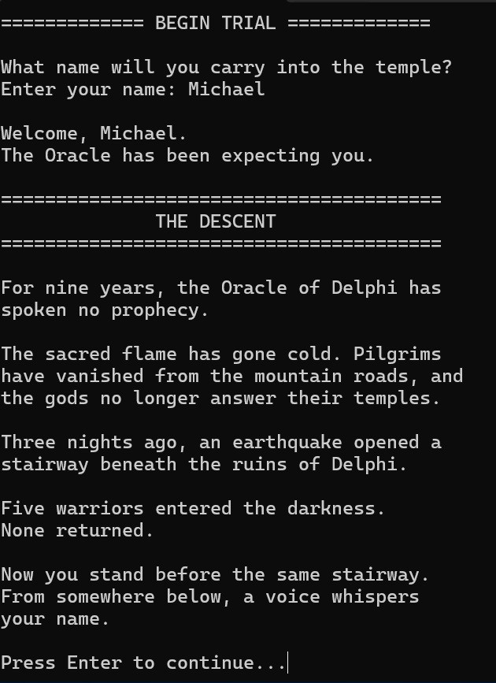

Languages
C++, PHP, JavaScript, Python, Swift, Objective-C, HTML, CSS, SQL
Senior Full-Stack Software Engineer | Game Development Student
I am an experienced software engineer expanding my development background into C++ and game development. I enjoy building well-structured software, solving technical problems, and creating interactive experiences that give users meaningful choices.
About Me
I am a senior full-stack software engineer with extensive experience building web applications and software platforms. My professional background includes working with technologies such as PHP, Laravel, Vue, JavaScript, MySQL, and related web development tools. I am currently pursuing a degree in Game Development at Full Sail University, where I am expanding my experience into C++ and game programming. I am especially interested in narrative-driven games, puzzle design, player choice, and systems where decisions affect later interactions. My goal is to combine the software engineering experience I have developed throughout my career with the skills I am learning in game development. I enjoy projects that require thoughtful architecture, problem-solving, and continuous improvement as a project grows.
C++, PHP, JavaScript, Python, Swift, Objective-C, HTML, CSS, SQL
Object-Oriented Programming, Classes and Objects, Header and Source File Organization, Functions and Program Flow, Input Validation, Debugging, Problem-Solving, Application Architecture, Database Development
Visual Studio, Git, GitHub, Branching, Pull Requests, Version Control, Project Planning
Laravel, Vue, Inertia, MySQL, PostgreSQL, Redis, Tailwind CSS
Featured Work
Replace the sample information below with your own work. Add screenshots, explain what each project does, and describe your development process.

C++ Console Application
The Oracle's Trial is a Greek mythology-inspired text adventure developed in C++. The player explores a mysterious temple, makes dialogue and story choices, collects items, develops character traits, and solves a mythology-inspired puzzle while progressing through multiple interconnected rooms. The game was designed around meaningful player interaction rather than simply moving from one prompt to another. Choices can affect player traits and later dialogue, while inventory items and puzzle interactions give the player additional ways to influence the experience. The puzzle also includes hints so players do not need previous knowledge of Greek mythology to solve it.
C++, Visual Studio, Git, GitHub, object-oriented programming, classes and objects, header and source files, std::vector, input validation, debugging, branching, and pull requests.
One of the most significant challenges was keeping the game organized as additional rooms, choices, traits, inventory interactions, and puzzle logic were added. The Game class began handling too many responsibilities, and several room methods were becoming larger and harder to maintain. I addressed this by reviewing the responsibilities of the existing code and breaking larger sections of game logic into smaller helper methods with clearer purposes. I also kept player-specific state inside the Player class and puzzle behavior inside the Puzzle class rather than allowing all of the logic to accumulate in Game. The challenge was not simply restructuring the code. I needed to make those improvements without breaking the features that were already working, including the trait system, inventory, puzzle, room navigation, and player choices. Testing each change as I worked allowed me to improve the structure while preserving the existing gameplay.
This project reinforced the importance of thinking about class responsibilities before a program becomes difficult to maintain. As the game expanded, I became more deliberate about deciding where logic should live and when a larger method should be divided into smaller pieces. I also strengthened my C++ skills by working with multiple classes, header and source files, vectors, input validation, and persistent player state. The project gave me additional experience using GitHub Issues, branches, commits, and pull requests as part of a structured development workflow. Most importantly, I learned how quickly even a relatively small game can grow in complexity when player choices and systems begin interacting with one another. Planning those interactions carefully makes future features easier to add and reduces the chance of breaking existing behavior.
Contact
I am interested in software engineering and game development opportunities where I can contribute my existing development experience while continuing to expand my skills in C++ and interactive systems.